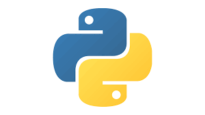
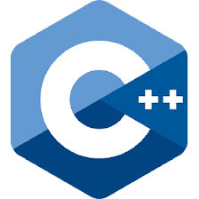

Program Language
파이썬(Python)

-
Python 귀도 반 로섬에 의해 만들어진 인터프리터 프로그래밍 언어이다.
- 문법이 매우 단순하고 미려하며, 학습 난이도가 매우 쉽기 때문에
초보자의 프로그래밍 입문용으로 매우 좋다.
- 또한 파이썬은 행정 시스템의 문서 정리 등 생산성과 실무에서의 사용도도 높다.
C
-
C 데니스 리치[2]가 만든 범용(general-purpose) 프로그래밍 언어이다.
원래 명칭은 그냥 'C'지만 한국에서는 'C언어'라는 명칭으로 주로 부른다.
- C언어 자체는 지원되는 기능이 적고 문법이 간단하다.
그러나 지원하는 기능이 적다고 그 적은 기능만 쓸 수는 없다.
- 또한 C는 프로그래밍 언어계에서 오늘날 영어와 같은 위치에 있다고 볼 수 있으며,
그러한 기능의 구현이나 최적화에 관한 트릭들이 존재하고 이것을 얼마나 많이 알고 있는 가가 사실 C언어의 핵심이다.
C++

-
C++ 덴마크의 비야네 스트로스트룹이 C언어를 바탕으로 제작했다.
- C++의 이름 유래는 C언어에서 1을 더해서 대입하라는 뜻으로 C++이 되었으며,
C언어를 거의 그대로 두고 필요한 만큼만 향상 시켰기 때문이다.
- C++는 프로그래머의 자유도가 높은 언어로써, 객체 지향이나 절차 지향 등의 설계에 제한을 두지 않는다. 또한 C와 유사한점 또한 많지만 앞서 말했드시 상당히 많은 부분을
지원 하기 때문에 C의 코드에서 C++ 방식으로 코딩 하려면 C의 설계부터
완전 새로 해야 하는 경우가 많다.
Java

-
Java는 썬 마이크로시스템즈의 제임스 고슬링이 만든 객체지향 프로그래밍 언어이다.
- C#과 문법적 성향이 굉장히 비슷하며, 이것의 가장 큰 특징은 독립적인 언어라는 점이다.
C/C++의 컴파일러와 달리 자바 컴파일러는 바이트코드인 클래스 파일을 생성하고,
기계어로 바꾸어 실행하는 것은 자바 가상 머신이다.
- 자바는 플랫폼에 자바 가상 머신만 설치되어 있다면 대체로 문제없이 작동한다. 이는 프로그램 실행의 주체가 운영 체제가 아닌 자바 가상 머신이기 때문이다.
또한 자바의 특징은 아예 처음부터 객체지향 언어로 개발 되었으며, 고수준의 객체지향 부분을 잘 구현하는 것에 집중하는 방식으로 언어가 복잡해지는 것을 방지하였다.